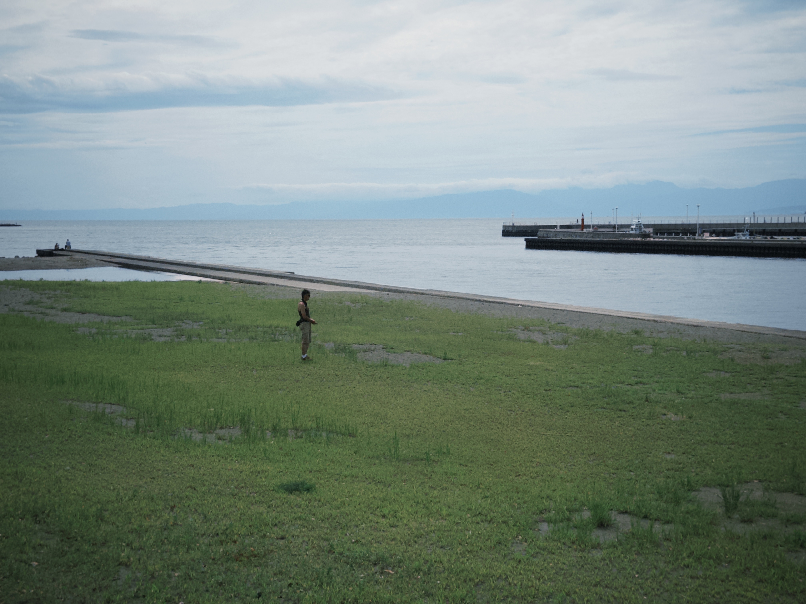
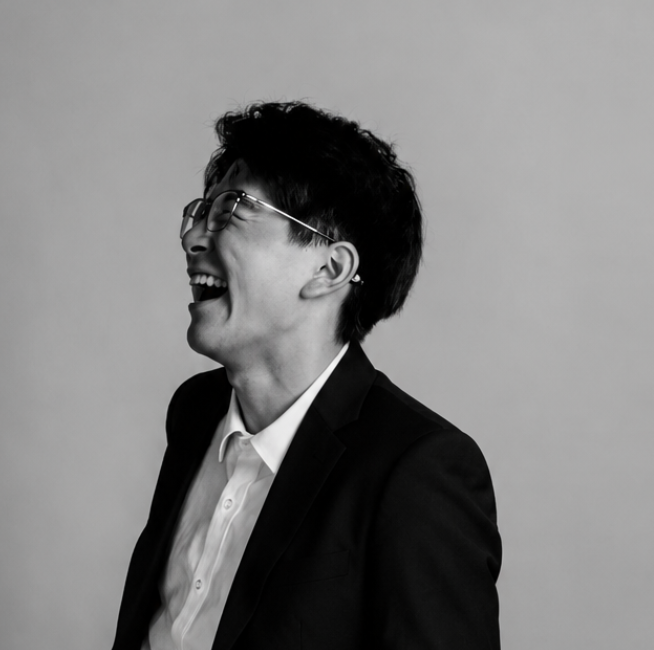

Welcome
Music. Technology. Philosophy.
Projects

Researches
Gallery
Rex Li
Nanjing, China

“My projects work across music, HCI, and technology. From following the rules to making room for surprise.”
I began playing drums at six. More than ten years later, percussion still shapes how I hear time: through the weight of a stroke, the texture of a surface, and the pause before the next sound. I had no idea then how much it would shape my life.
I was first drawn to hip-hop and its flexible flows, where a performer can play with the beat rather than simply follow it. Frank Ocean opened up another way of listening for me. His music felt calm and spare, yet unexpectedly emotional. I began to hear music as a language, with stories carried by lyrics, arrangements, and the context around them.
In the summer of 2025, I built a music genre classifier with a convolutional neural network (CNN). It was my first time using a technical method to explore a question about music. The project showed me how computation could open new ways of working with sound, and it sparked my interest in building with code.
Photography gives me another way to pay attention. I enjoy noticing how light, framing, and timing can change the feeling of a scene. It lets me explore the world visually, alongside my work with sound and code.
In 2026, I brought these interests together in a portfolio titled The Communication. Its projects explore expression, misinterpretation, and listening through music and technology. Working across these fields lets me carry my questions into new areas of study and practice.